Em 2024, fui chamado para executar o plano diretor de TI que ajudei a desenhar em 2023, na financeira de uma grande montadora de veículos. Contei o diagnóstico em 3 lições atuando como Arquiteto de Soluções, Corporativo e Líder Técnico.
Formalmente, eu era o Tech Lead (TL) da frente Tech. Na prática, era o Staff Engineer (engenheiro de nível Staff) das 8 frentes: a referência técnica dos outros TLs e um dos principais contribuintes do plano de ação e das regras do jogo.
O ponto de partida era grande: 52 sessões de entrevista com 25 áreas, 297 oportunidades de melhoria, 87 capacidades, 8 pilares e 13 soluções, em um roadmap de 3 ondas para os anos fiscais (FY) 2024 a 2027. Diagnosticar foi uma parte. Executar foi outra, e trouxe cinco lições que, a meu ver, valem para qualquer empresa.
Em resumo#
- Problema: um roadmap de 3 anos não dizia quem faz o quê na segunda-feira, e as entrevistas apontavam dependência de pessoas, trabalho manual e falta de padrão.
- O que fiz: contribuí com decisões técnicas e com os mecanismos que as sustentam. Defendi o fim da aprovação do analista para release em desenvolvimento (DEV), com o controle mantido em homologação (HML) e produção (PRD), e a mesma configuração nos três ambientes. Propus a migração de banco de dados no pipeline e um tracing distribuído. No fluxo de valor, ajudei a incluir uma etapa técnica com prova de conceito (PoC) e registro da decisão em Architecture Decision Record (ADR), um registro curto de uma decisão e do seu motivo. Mantive vivo o repositório de arquitetura e montei uma matriz técnica de entrevista.
- Medição: os resultados não foram medidos em números; o texto descreve o que foi feito e o que ficou em aberto.
1. Estratégia ligada à execução#
Um roadmap em 3 ondas do FY24 ao FY27 diz o que fazer, mas não diz quem faz amanhã.
Entre outubro e dezembro de 2023, veio o diagnóstico. Em janeiro de 2024, ajudei a escrever a primeira versão do plano de ação, com o objetivo de aumentar a velocidade e a qualidade das entregas. Na onda 1, de alto impacto, estavam três soluções: criação de framework de TI, seleção de software e aceleração na entrega.


Clique na imagem para expandir. Dados confidenciais foram omitidos.
Desdobrei o roadmap em 4 áreas: Regras do jogo; Gestão; Conhecimento; e Infraestrutura, DevOps e Arquitetura. Cada área ganhou atividades, com responsável e status.


Clique na imagem para expandir. Dados confidenciais foram omitidos.
Em janeiro, apresentei o plano de ação à gerência de TI do cliente. Propus um quadro no Jira para acompanhar a execução do próprio plano, e o acompanhamento entrou na reunião periódica de status. Propus também gatilhos para a entrada de novas melhorias.
Também decidi não ficar com tudo. Regras do jogo e Conhecimento ficaram comigo, junto com os TLs das frentes. Infraestrutura e DevOps ficaram com o time de DevOps. Gestão, com o status no Jira e os indicadores, ficou com a gestão. Cada dono podia agir sem esperar por mim, e eu ficava livre para o trabalho que exigia o papel de Staff.
Nem tudo andou no mesmo ritmo. A documentação esbarrou em algo prático: parte do time não tinha acesso ao Confluence. Esse trabalho de acessos e de transferência de conhecimento (KT) raramente aparece no roadmap, mas destrava os outros.
A lição aprendida foi: estratégia só sai do papel quando vira plano com donos, status e ritual de acompanhamento; o trabalho do Staff é desenhar esse mecanismo e distribuir a posse, não concentrá-la.
2. Priorizar pela dor real e dizer o que fica de fora#
Eram 297 oportunidades e 8 pilares. Fazer tudo era impossível, e o problema era difuso: frases soltas de entrevista, cada uma com um dono diferente.
Ouvimos muita queixa concreta. "Existe instabilidade em ambiente não-produtivo." "Não existe migração de estrutura de BD em pipeline." "Muito trabalho manual."
Escolhi começar por essas queixas, em vez das soluções mais abstratas do roadmap. O trade-off ficou explícito: ganhar confiança e velocidade com atritos que o time sente toda semana, e deixar para depois o que era estratégico, porém distante. Cada frase virou uma oportunidade e, depois, uma atividade do plano:
- garantir que desenvolvimento, homologação e produção (DEV, HML e PRD) tenham a mesma configuração, como a versão do Java;
- definir a migração de banco de dados no pipeline, porque passos manuais na change (requisição de mudança, no ITIL) causavam falhas;
- verificar a instabilidade da ferramenta de logs (Kibana ou Graylog) e implantar uma solução de tracing distribuído.


Clique na imagem para expandir. Dados confidenciais foram omitidos.
Dizer não também fez parte. Muita oportunidade ficou fora do plano de janeiro. Os gatilhos de entrada davam a ela um caminho claro de volta, em vez da insistência de quem gritasse mais alto.
A lição aprendida foi: diante de um problema difuso, direção técnica é escolher poucas alavancas que melhoram todos os times de uma vez, dizer o que fica para depois e explicitar o custo de cada escolha.
3. Um sistema de trabalho que funciona sem o Staff na sala#
Nas entrevistas: "Times estruturados por projeto em vez de por produto." E também: "Existe dependência de pessoas em vez de processos."
O time estava organizado em 8 frentes de negócio: corretora de seguros, consórcio, marketing e produtos, controladoria, fast track, CRM, pequenos projetos e Tech. Cada frente tinha 1 Product Owner (PO), 1 TL e de 2 a 5 desenvolvedores. Eu não criei essas frentes, mas montei a "nova visão" de quem ficava em qual frente e defini o destino de cada pessoa contratada. Quem trabalha onde molda o sistema que se constrói (a Lei de Conway: sistemas espelham a comunicação de quem os constrói).


Clique na imagem para expandir. Dados confidenciais foram omitidos.
Com 50 pessoas, eu não conseguia estar em cada conversa. Por isso, ajudei a desenhar um fluxo único, da demanda até o KT com a sustentação: 10 etapas em 3 fases, Preparação, Construção e Transição. Ajudei a definir as regras do jogo (fluxo, critérios de entrada e saída e papéis) para todas as frentes. A adoção começou pela frente Tech e depois foi estendida às demais.
Há dois portões. A Definition of Ready (DoR), o critério para começar, fica antes da Construção. A Definition of Done (DoD), o critério para concluir, fica antes da Entrega. Quem pergunta "isso está pronto?" é o processo, não uma pessoa.
A etapa Técnica concentra o julgamento de engenharia. Identifica-se a melhoria, medem-se capacidade e velocidade, faz-se uma PoC, define-se a solução e registra-se a decisão em ADR. Nela entraram também as decisões de qualidade que vieram das entrevistas: DEV, HML e PRD com a mesma configuração, migração de BD no pipeline e tracing distribuído.
Uma dessas decisões teve custo. Defendi retirar a aprovação do analista para release em DEV e manter o controle em HML e PRD, via change. A alternativa era manter a aprovação em todos os ambientes. O ganho foi velocidade e autonomia onde o risco é baixo, sem abrir mão do controle onde ele importa.


Clique na imagem para expandir. Dados confidenciais foram omitidos.
Se o fluxo diz o que acontece, falta dizer quem faz. Como eu não era chefe dos POs, dos TLs nem do negócio, meu instrumento foi a escrita: propus a definição de papéis em RACI (quem executa, quem responde, quem é consultado, quem é informado).
Escrevi também um template de história, com descrição e subtarefas, e boas práticas para épico, história e subtarefa, para que a mesma demanda tivesse o mesmo formato em qualquer frente. A matriz abaixo é uma ilustração simplificada e genérica; não é a matriz do projeto.


Clique na imagem para expandir.
Havia também o trabalho invisível. O KT de um sistema, o onboarding, a estimativa de história, a criação de change e a abertura de requisição no ServiceNow foram documentados. Começamos em setembro pelas demandas novas e depois ampliamos o KT para o contexto global. As entrevistas diziam: "Não há conhecimento adequado no time de sustentação." Conhecimento só na cabeça de alguém é um risco do sistema.
O fluxo ainda tinha uma pergunta em aberto: qual seria o fluxo para a sustentação, num time cuja demanda muda o tempo todo?
A lição aprendida foi: para escalar além da própria presença, o Staff transforma julgamento técnico em mecanismo: portões de entrada e saída, papéis escritos e uma etapa técnica com PoC e ADR, pilotados numa frente antes de estender às demais.
4. Arquitetura e escrita como ferramentas de influência#
No diagnóstico, criamos um repositório de arquitetura no Archi, com ArchiMate. Eu temia que ele ficasse parado após a entrega do serviço. Na execução, continuou vivo: uma das atividades do plano foi incluir nele dados de negócio e apresentá-los.
Sem autoridade formal sobre os times, eu não podia mandar. Podia escrever e desenhar para convencer. Uma visão de integração mostrava quem chama, por onde passa e o que existe atrás: sistemas externos e internos chegam por um API Gateway, e atrás dele ficam os backends novos, em OpenShift, e os legados, que passam por um balanceador Apache.


Clique na imagem para expandir. Dados confidenciais foram omitidos.
As decisões da etapa Técnica também ganharam forma escrita, em ADR: quem não estava na sala consegue ler a decisão e o motivo.
A lição aprendida foi: sem autoridade formal, a influência vem de artefatos que circulam sem você: um mapa de arquitetura que todos usam e decisões escritas com o motivo.
5. Contratar com critério técnico explícito#
Time grande também contrata. Cada pessoa contratada multiplica o time, para o bem ou para o mal, e por isso a contratação é uma alavanca de Staff.
Para as entrevistas técnicas, montei uma matriz de 23 assuntos em 3 grupos: Desenho, Código e Suporte. Cada assunto recebe um nível: Nenhum, Baixo, Médio ou Alto.
Até novembro de 2024, foram 12 entrevistas registradas. O controle de candidatos guardava o feedback, a avaliação técnica, se foi enviado ao cliente, se foi aceito e o time de destino.


Clique na imagem para expandir.
O candidato acima é fictício e os níveis são só para ilustrar. O valor da matriz está em comparar candidatos pelo mesmo critério, mostrar ao cliente onde há lacuna e manter a barra alta mesmo quando outra pessoa conduz a entrevista.
A lição aprendida foi: critério técnico escrito torna a contratação repetível por outros entrevistadores; é assim que o Staff eleva a barra sem estar em todas as entrevistas.
Conclusão#
O trabalho de Staff aqui foi desenhar o sistema em que as pessoas trabalham, ligar a estratégia à execução e deixar mecanismos que não dependem da minha presença.
Olhando para trás, levaria duas coisas para o próximo lugar: combinar desde o início como o resultado será medido, e tratar a sustentação como parte do desenho do fluxo, e não como exceção.
Os anos anteriores estão em avaliação de maturidade da TI (2021), solução de dados na GCP (2022) e 3 lições (2023), onde está o diagnóstico.